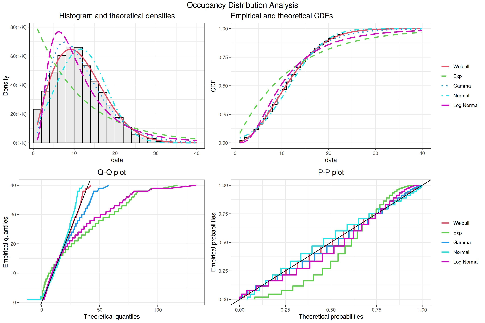

Models & Pipelines
Framework Architecture
The modeling framework implements prediction pipelines that operate on the engineered features described in the previous chapter. The implementation resides in the src/python/models directory: algorithms_duration.py, algorithms_occupancy.py, pipelines.py, and cross_validation.py.
Cross-Validation Methodology
Our prediction framework operates on two complementary datasets: LC_train, containing both features and response variables, and LC_test, containing only features. The validation process begins with a strategic partition of LC_train into training and holdout segments, allocating 80% and 20% of the data respectively.
The training segment serves as the foundation for model development through cross-validation. During this phase, we systematically evaluate different model architectures, pipeline configurations, and hyperparameter combinations. Each candidate model undergoes rigorous testing across multiple data splits, allowing us to assess its stability and predictive power under varying conditions.
The holdout segment provides validation of our model choices. By evaluating performance on this previously unseen data, we can detect potential overfitting and ensure our model generalizes effectively beyond its training examples. This validation guides our selection of the optimal model configuration, including the choice between architectures like Ridge or Lasso regression, pipeline variants such as vanilla or interaction-based approaches, and appropriate cross-validation strategies.
After identifying the strongest configuration through this validation process, we proceed to train our production model. This final training phase utilizes the complete LC_train dataset, incorporating all available labeled data to maximize the model’s predictive capabilities. The resulting model can then generate predictions for the unlabeled LC_test data with confidence grounded in our thorough validation methodology.
Core Components
To implement this validation methodology effectively, our framework relies on three essential elements: base algorithms that handle the core prediction tasks, feature processing pipelines that transform raw data into meaningful inputs, and cross-validation strategies that ensure reliable performance assessment. We will start with the cross-validation framework because we discussed the purpose directly above.
Cross-Validation Framework
The framework implements three validation strategies:
def get_cv_methods(n_samples: int):
n_splits = 10
default_test_size = n_samples // (n_splits + 1)
return {
'kfold': KFold(
n_splits=10,
shuffle=True,
random_state=3
),
'rolling': TimeSeriesSplit(
n_splits=n_splits,
max_train_size=default_test_size * 5,
test_size=default_test_size
),
'expanding': TimeSeriesSplit(
n_splits=n_splits,
test_size=default_test_size
)
}| Strategy | Description | Characteristics | Best For |
|---|---|---|---|
| kfold | Random k splits | - Provides baseline performance - Less suitable for temporal patterns |
Duration prediction |
| rolling | Fixed-size moving window | - Captures recent temporal dependencies - Maintains consistent training size |
Occupancy prediction |
| expanding | Growing window | - Accumulates historical data - Increases training size over time - Balances temporal and volume effects |
Long-term trends |
Algorithm Architecture
The duration prediction models include:
def get_model_definitions():
return {
'Ridge': (Ridge(), {
'model__alpha': np.logspace(0, 2, 10),
'select_features__k': np.arange(10, 55, 5),
}),
'Lasso': (Lasso(), {
'model__alpha': np.logspace(-2, 0, 10),
'select_features__k': np.arange(10, 55, 5),
}),
'PenalizedSplines': (Pipeline([
('spline', SplineTransformer()),
('ridge', Ridge())
]), {
'model__spline__n_knots': [9, 11, 13, 15],
'model__spline__degree': [3],
'model__ridge__alpha': np.logspace(0, 2, 20),
'select_features__k': np.arange(10, 55, 5),
}),
'KNN': (KNeighborsRegressor(), {
'model__n_neighbors': np.arange(15, 22, 2),
'model__weights': ['uniform', 'distance'],
'select_features__k': np.arange(10, 55, 5),
}),
}| Model Type | Key Characteristics | Hyperparameter Range |
|---|---|---|
Ridge |
Linear with L2 penalty | \(\alpha \in [10^0, 10^2]\) |
Lasso |
Linear with L1 penalty | \(\alpha \in [10^{-2}, 10^0]\) |
PenalizedSplines |
Cubic splines with ridge penalty | knots: {9, 11, 13, 15}, ridge: \(\alpha \in [10^0, 10^2]\) |
KNN |
Non-parametric | neighbors: {15, 17, 19, 21}, weights: {uniform, distance} |
Duration Model Architecture
def get_model_definitions():
return {
'PenalizedLogNormal': (Pipeline([
('log_transform', FunctionTransformer(
func=lambda x: np.log1p(np.clip(x, 1e-10, None)),
inverse_func=lambda x: np.expm1(x)
)),
('ridge', Ridge())
]), {
'model__ridge__alpha': np.logspace(0, 2, 20),
'select_features__k': np.arange(10, 55, 5),
}),
}The duration models use log-normal distribution to handle right-skewed data, as shown in the distribution analysis:

Occupancy Model Architecture
The occupancy models use a custom wrapper for count-based predictions:
class RoundedRegressor(BaseEstimator, RegressorMixin):
"""Ensures integer predictions for occupancy modeling."""
def __init__(self, estimator):
self.estimator = estimator
def predict(self, X):
y_pred = self.estimator_.predict(X)
y_pred_rounded = np.round(y_pred).astype(int)
return np.maximum(y_pred_rounded, 0) # Ensure non-negativeThis wrapper enables count-based modeling through both the commonly shared Ridge, Lasso, PenalizedSplines, and KNN algorithms, as well as specialized distributions:
def get_model_definitions():
return {
'PenalizedPoisson': (RoundedRegressor(Pipeline([
('log_link', FunctionTransformer(
func=lambda x: np.log(np.clip(x, 1e-10, None)),
inverse_func=lambda x: np.exp(np.clip(x, -10, 10))
)),
('ridge', Ridge())
])), {
'model__estimator__ridge__alpha': np.logspace(0, 2, 20),
'select_features__k': np.arange(70, 100, 10),
}),
'PenalizedWeibull': (RoundedRegressor(Pipeline([
('weibull_link', FunctionTransformer(
func=lambda x: np.log(-np.log(1 - np.clip(x/(x.max()+1), 1e-10, 1-1e-10))),
inverse_func=lambda x: (1 - np.exp(-np.exp(np.clip(x, -10, 10)))) * (x.max() + 1)
)),
('ridge', Ridge())
])), {
'model__estimator__ridge__alpha': np.logspace(0, 2, 20),
'select_features__k': np.arange(70, 100, 10),
})
}The occupancy data follows a Poisson (based on it being a count-based variable) distribution. We also found that a Weibull distribution could provide a better fit:

Pipeline Architecture
The framework contains three preprocessing pipelines:
def get_pipeline_definitions():
return {
'vanilla': lambda model: Pipeline([
('scaler', 'passthrough'),
('model', model)
]),
'interact_select': lambda model: Pipeline([
('scaler', 'passthrough'),
('interactions', PolynomialFeatures(
degree=2,
interaction_only=True,
include_bias=False
)),
('select_features', SelectKBest(
score_func=f_regression,
k=100
)),
('model', model)
]),
'pca_lda': lambda model: Pipeline([
('scaler', 'passthrough'),
('feature_union', FeatureUnion([
('pca', PCA(n_components=0.95)),
('lda', LinearDiscriminantAnalysis(n_components=10)),
])),
('interactions', PolynomialFeatures(
degree=2,
interaction_only=True,
include_bias=False
)),
('select_features', SelectKBest(
score_func=f_regression,
k=100
)),
('model', model)
])
}Vanilla Pipeline
This configuration maintains feature interpretability while providing robust baseline performance through careful scaling of our engineered feature set.
Interaction Network Pipeline
This interact_select pipeline implements a sparse interaction network, systematically capturing pairwise feature relationships while managing dimensionality through selective feature retention.

This approach was intended to function as a simplified mesh network, restricting connections to binary interactions without activation functions. The SelectKBest component manages dimensionality by identifying the most influential features and interactions.
Dimensionality Reduction Pipeline
This pipeline combines two complementary dimensionality reduction techniques before interaction modeling. We extract principal components that explain 95% of the variance (PCA) alongside 10 linear discriminant components (LDA), aiming to capture both the dominant patterns in feature variation and natural class separations in the data. These reduced-dimension components are then allowed to interact, with SelectKBest filtering the most predictive combinations.
Framework Integration
The modeling framework described here serves as the foundation for our training and testing procedures. The model architectures process the engineered features from the previous chapter, while the pipeline configurations and cross-validation framework establish the structure for training optimization detailed in the next chapter.
The training chapter demonstrates how these components are orchestrated through MLflow experiment tracking and hyperparameter optimization.